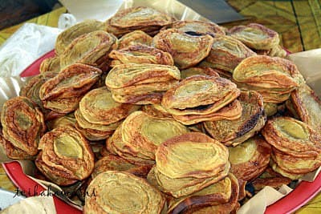

Nasi kerabu is a Malaysian cuisine rice dish, a type of nasi ulam, in which blue-colored rice is eaten with dried fish or fried chicken, crackers, pickles and other salads. The blue color of the rice comes from the petals of Clitoria ternatea (butterfly-pea) flowers (bunga telang), which are used as a natural food coloring in cooking it. It is very popular in the east coast states of Peninsular Malaysia such as Kelantan and Terengganu, and now can be found throughout Malaysia as well as in southern Thailand, where it is known as khao yam.
Budu is a traditional condiment among the ethnic Malays of east coast of Peninsular Malaysia, particularly in the state of Kelantan and Terengganu. Budu has been declared a Malaysian heritage food by the Malaysian Department of National Heritage. Even ethnic Chinese in Kelantan are involved in budu production. It is traditionally made by mixing anchovies and salt in a ratio ranging from 2:1 to 6:1 and allowing the mix to ferment for 140 to 200 days. It is used as a flavouring and is normally eaten with fish, rice, and raw vegetables.
Laksam (known as Laksei in Kelantan is a dish from the state of Kelantan made from rice flour and eaten with gravy. Usually this melted rice flour mixture will be coated on a pot lid and cooked. When hardened, it will be rolled into long and ready to serve. When served, it can be cut into pieces to easily absorb laksam gravy.
Just mention the desserts available in Kelantan, there are so many. Kelantan is famous for a traditional food paradise has a wide variety of cakes with a variety of flavors, various names and its own uniqueness. Here, there are various types of cakes that you can find in Kelantan. It is in some of which are hard to find and some are unknown to many with strange names. What is that importantly, its deliciousness and sweetness are only available when you are here.
